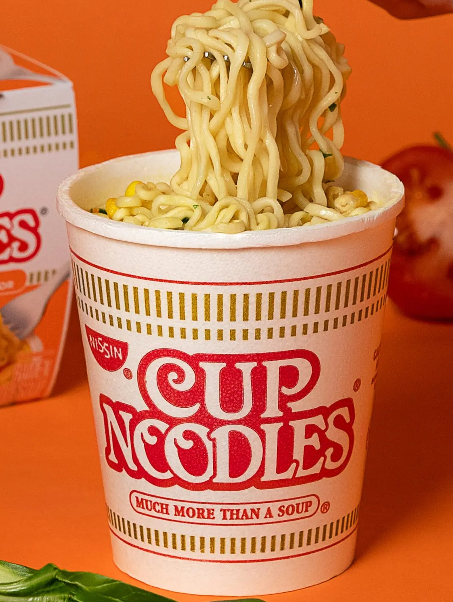

Home
cupnoodles

description
this is a easy alternative to regular ramen noodles making it quicker and easier to make due to its simples and easy to follow instructons,my name is jadi and i will be teaching you how to make cupnoodles.
ingredients
- hot water or water and a microwave
- cup noodles
- fork or chopsticks
- AC or mouth
steps
- open the lid of the cupnoodles
- pour some water on the cup nooodles or pour some boiling water
- put it in the microwave or if you added hot water just stir around and wait till they cool off to eat
- you put it in a microwave add 3 minutes and wait
- when out of microwave use AC or mouth to cool it off and enjoy!